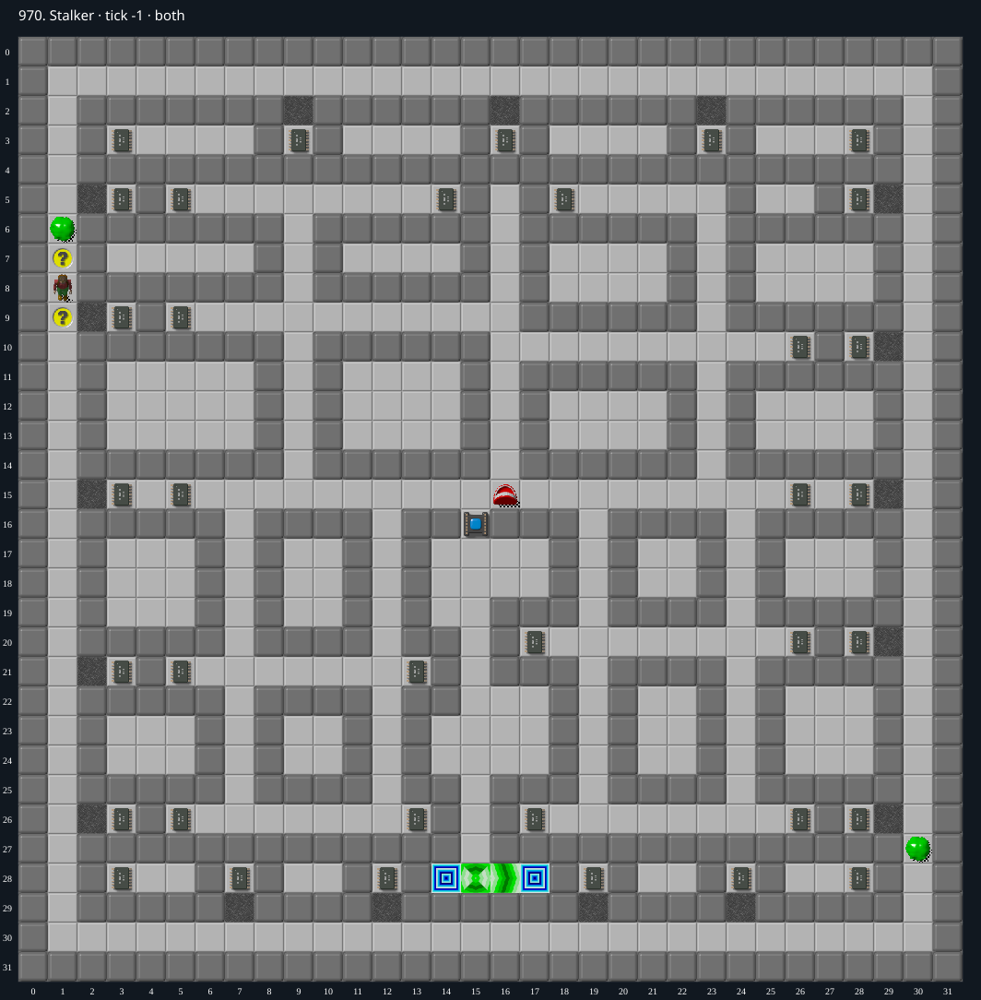

Jacques · Original Tile World MS
970. Stalker
Impossibility argumentFour required chips are permanently sealed behind immutable walls; both exits lie behind the socket requiring all 36 chips.
36 chips required · 999 second time limit
Why completion is impossible
- All 36 chips are required and exactly 36 exist. No blocks, cloners, teleports, keys, switches or wall-changing tools occur.
- The chip at (3,3) is in the five-cell room {(3,3),(4,3),(5,3),(6,3),(7,3)}. Walls at x=2 and x=8 on y=3, and x=3..7 on y=2 and y=4 enclose it. Chip starts outside at (1,8).
- Ordinary walls cannot be removed or traversed by any available actor or mechanism. Thus this chip can never be collected; the chip count cannot reach zero.
- Both exits (14,28) and (17,28) belong to an inner region connected to the starting/outside region only by socket (15,16). A flood-fill overapproximation allows arbitrary entry across every non-wall/non-socket tile, including all force floors and monsters, and still reaches neither exit.
- The socket cannot open while any chip remains. There is no alternate win condition, so the level is impossible regardless of monster timing or random choices.
Inspect both layers
The main map shows the initial runtime state. Switch to the buried layer to inspect hidden terrain and items. Hover coordinates are also available in the downloadable SVG.


Recorded checks and attempts
- data audit: Decoded both 1024-cell DAT planes and exact level metadata; initialized production MS runtime and rendered actual game sprites.